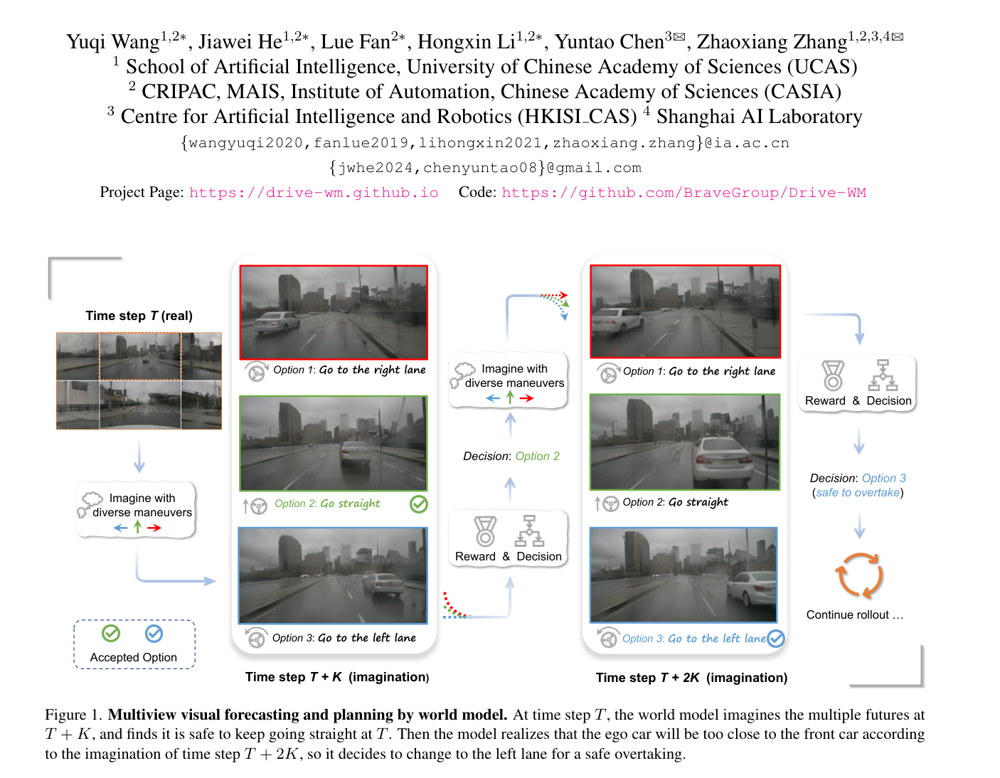
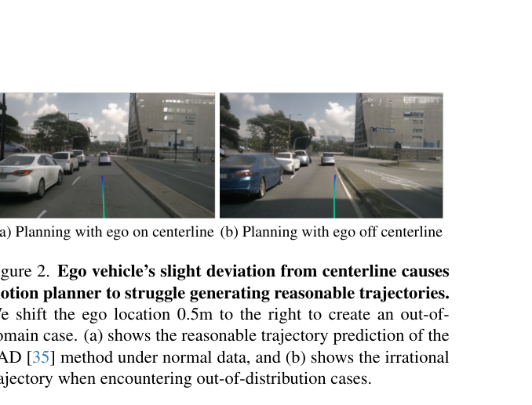
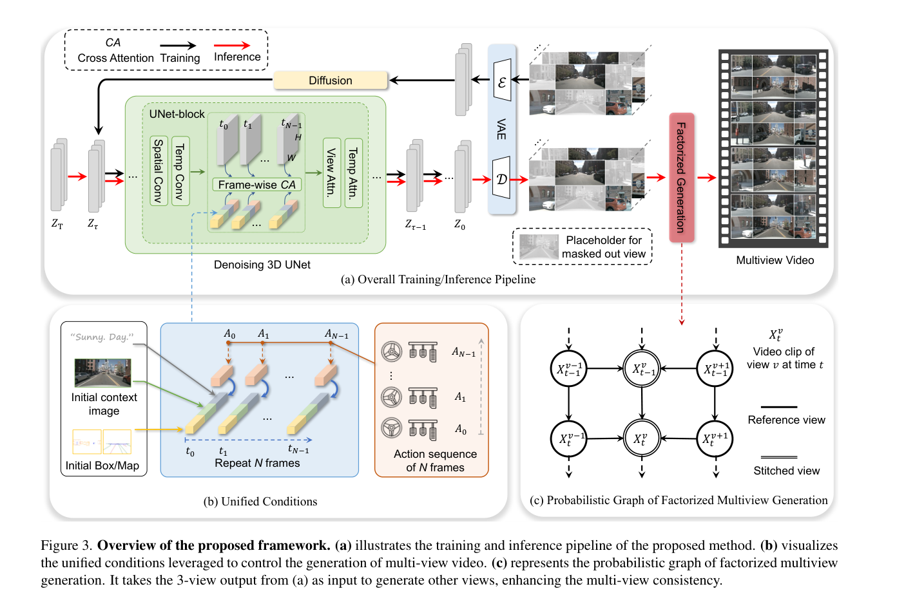

Drive-WM: Driving into the Future: Multiview Visual Forecasting and Planning with World Model for Autonomous Driving
Drive-WM 通过时空多视角 diffusion 和视角因子分解生成一致的未来多视角视频，再用不同候选驾驶动作 rollout 多个未来，并基于图像 reward 选择更安全轨迹。
multiview world model、visual forecasting、view factorization、latent video diffusion、unified condition interface、tree-based planning、image-based reward、nuScenes
Multiview video world model + planning reward
部分：代码仓库公开，但部分权重/训练脚本发布情况需按仓库最新状态确认
很高：世界模型用于规划的代表性工作
计划公网链接：https://ixgnozeix.github.io/paper-reports/report/drive-wm/
1. 论文速览
Drive-WM 的关键突破是把世界模型从单视角视频生成推进到多视角驾驶预测，并首次明确展示其与端到端 planner 的结合。模型通过 temporal layers 和 multiview layers 在 latent diffusion 中同时建模时间和视角；再用 factorized multiview generation 让 stitched views 条件于 reference views，提高重叠区域一致性。规划阶段对 go straight/turn left/turn right 等候选动作生成多个未来，用 object reward 和 map reward 选择轨迹。论文报告单视角图像生成 FID 12.99，视频生成 FID 15.8，并在 OOD lateral shift 场景中改善 planner soundness。
2. 研究问题与动机
端到端 planner 只模仿专家轨迹时，遇到分布外偏移可能继续输出不合理轨迹。人类会先“想象”不同动作后果，再选择风险更低方案。Drive-WM 选择像素/视频世界模型，是因为很多危险因素如水雾、破损路面、未矢量化障碍难以完全转成 BEV/box；同时自动驾驶感知通常依赖多视角相机，单视角世界模型不足以服务 BEV planner。
4. 方法详解
模型先把图像 diffusion backbone 扩展为 temporal-multiview denoiser：空间层逐帧处理，temporal layer 建模帧间依赖，multiview layer 在视角维做 self-attention。为增强相邻视角重叠一致性，作者将视角划分为 reference views 和 stitched views，先生成 reference，再条件生成 stitched。统一条件接口把初始帧、文本、ego actions、3D boxes、BEV map、reference views 等异构条件合并。规划时用已有 planner 采样候选动作，world model rollout 多个未来，reward 结合 object collision 与 map/drivable area 选择最优。
5. 实验与结果
实验包含单视角/多视角生成质量、可控性、视角一致性和规划。论文报告图像生成 FID 12.99、视频生成 FID 15.8，并用 keypoint matching 衡量多视角一致性。Ablation 表明 layout condition、temporal embedding、temporal/view layers 和 factorization 都影响质量与一致性。规划表显示 tree-based planner 优于随机命令和按数据分布采样命令，combined reward 优于单一 reward。证据缺口是 planner 集成仍在 open-loop/离线设定，world model 误差随 rollout 变长会积累。
6. 复现要点
复现需 nuScenes 多视角视频、相机标定、3D boxes/BEV layout/action 条件。先跑 layout-based image/video generation，再跑 multiview factorization；最后接 VAD 轨迹候选和 reward selection。硬件成本较高，建议先低分辨率和短 horizon。阻塞点是多视角同步、条件编码、diffusion 训练、FVD/FID 评估和 planning reward 对齐。验收标准是多视角一致性指标与规划选择案例，而非单张生成图。
7. 分析、局限与边界
Drive-WM 最有价值的是把世界模型用于“行动前多未来评估”，而不只是生成酷炫视频。证据支持 world model 能发现某些 OOD planner 失败，但不能证明长 horizon 模拟可靠。后续可用 3D occupancy 或 NeRF/4D scene constraints 约束像素生成，并用 formal safety reward 替代 GPT-4V/图像启发式 reward。
8. 组会问答准备
A：自动驾驶 BEV 感知依赖环视一致性，单视角视频无法覆盖车辆周围完整环境。
A：先生成不重叠 reference views，再条件生成 stitched views，提高相邻视角重叠区域一致性。
A：对不同候选动作 rollout 未来视频，用图像 reward 评估碰撞和道路可行性，选择 reward 最大轨迹。
A：DriveDreamer 强调结构条件 diffusion 与动作预测；Drive-WM 强调多视角一致生成和 planner reward tree。
A：生成误差会随时间累积，reward 若不可靠可能选择视觉上 plausible 但物理危险的轨迹。
9. 补充图解与附录证据



我的阅读笔记
这是 WM 用于 planning 的核心论文。可与 OccWorld 讨论“像素世界模型 vs occupancy 世界模型”的安全性和可验证性差异。